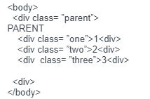
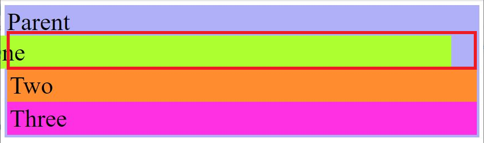
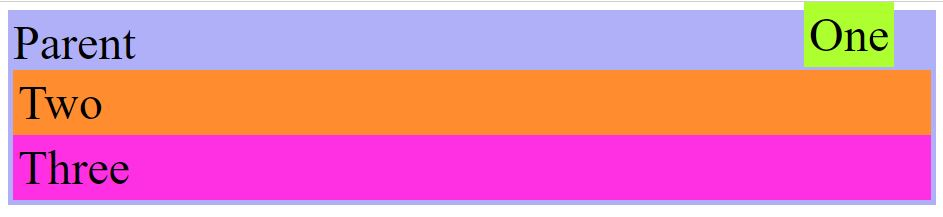
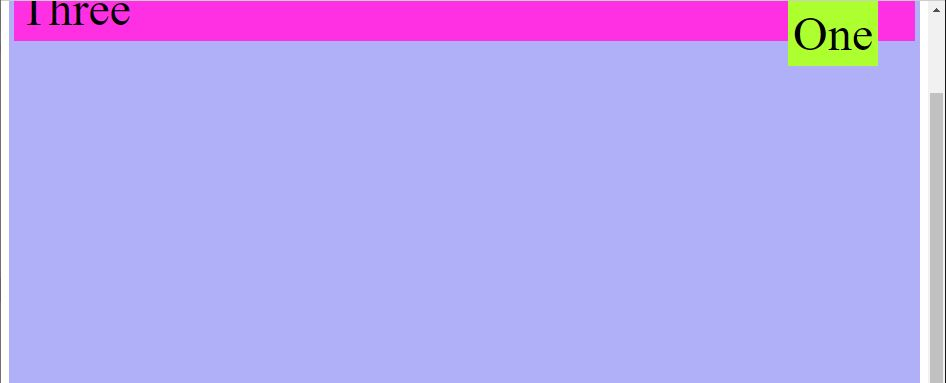
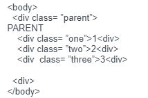
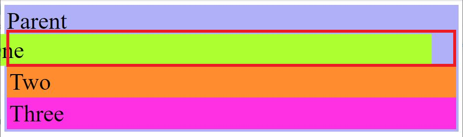
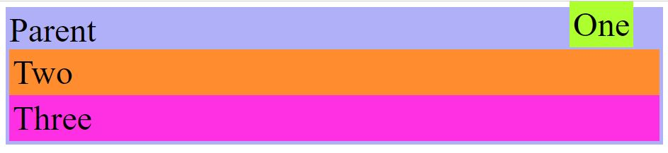
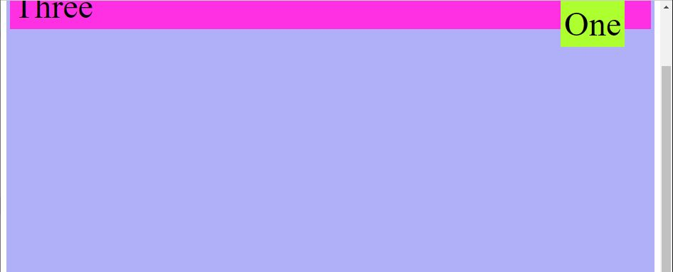

Let me try to explain.
What are the differences between relative, absolute, and fixed positioning?
This is helpful for understanding that static positioning is by default. The divs with the content, and the actual output of the content, are layed out exactly like the workflow of the html code.
Relative essentially acts the same as static but the difference is that it can position top,right, bottom, left. though it only acts to its parent element. Looking at our HTML workflow and we add some classes:

So by positioning relative to .one it will move only within our parent. THOUGH it will be moving from its workflow, essentially the space our .one has been moved is still there and is somewhat invisible, but the space that is there is reserved for its workflow. The other elements will still be in their ‘static’ position. The example below, helps to show the reserved space, and that the top of the red line is where it’s relative too (50px from the top).
.png)
CSS= .one { position: relative; top: 50px; }

CSS .one { position: relative; right: 50px; }
This is another example that it is relative to its workflow (the red outline), and that it’s 50px to the right. All the other elements are static so they are unaffected.
Absolute removes the content from the html workflow, essentially being able to move to wherever you want, specifically to the page. This keeps the other unaffected elements to stick to the workflow so it won’t affect anything around it.

I can move this anyway on the page as long as my parent element stays static.

CSS: .one { position: absolute; top: 0; right: 50px; }

Essentially it’s like absolute, though it stays in its position even if you try to scroll away from it.

CSS: .one { position: fixed; top: 0; right: 50px;}
:^)
Back to top
It's best to know that positioning is always static by default, meaning that it will order or follow the content to the workflow of the html. This would be the workflow of the html:
<.body>
<.div>
<.div>1<.div>
<.div>2<.div>
<.div>3<.div>
<.div>
<./body>
This is helpful for understanding that static positioning is by default. The divs with the content, and the actual output of the content, are layed out exactly like the workflow of the html code.
Relative Positioning
Relative essentially acts the same as static but the difference is that it can position top,right, bottom, left. though it only acts to its parent element. Looking at our HTML workflow and we add some classes:

So by positioning relative to .one it will move only within our parent. THOUGH it will be moving from its workflow, essentially the space our .one has been moved is still there and is somewhat invisible, but the space that is there is reserved for its workflow. The other elements will still be in their ‘static’ position. The example below, helps to show the reserved space, and that the top of the red line is where it’s relative too (50px from the top).
CSS= .one { position: relative; top: 50px; }

CSS .one { position: relative; right: 50px; }
This is another example that it is relative to its workflow (the red outline), and that it’s 50px to the right. All the other elements are static so they are unaffected.
Absolute
Absolute removes the content from the html workflow, essentially being able to move to wherever you want, specifically to the page. This keeps the other unaffected elements to stick to the workflow so it won’t affect anything around it.

I can move this anyway on the page as long as my parent element stays static.
CSS: .one { position: absolute; top: 0; right: 50px; }
Fixed
Fixed positioning is similar to absolute but instead, parents itself to the over html page. So it does leave its initial workflow, though it becomes fixed to the position it is set too on the page. For instance giving it a top: 0; it will stay at the top of the page. Though it also stays wherever it’s position when scrolling through the page. So this would be good to say a banner that you want to show with navigation no matter when you scroll.

Essentially it’s like absolute, though it stays in its position even if you try to scroll away from it.
CSS: .one { position: fixed; top: 0; right: 50px;}
:^)
Back to top